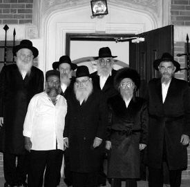

“ ק בוצה ” . מושג כה מוכר בעגה החבדי”ת ובאופן מעורר התפעלות – לא נדוש לעולם. נית
במוצאי שבת קודש האחרונה, התכנסו בבניין 770 שבכפר חב”ד, בוגרי ה’קבוצה’ הראשונה שהתקיימה בשנים תשכ”א-תשכ”ב. הייתה זו ה’קבוצה’ הראשונה בהיסטוריה החבדי”ת. ההתוועדות התקיימה לציון 50 שנה לשובם ארצה, עם תום שהייתם בד’ אמות של הרבי מלך המשיח • ‘בית משיח’ נדד איתם אל הימים ההם, ושמע על יוזמה ועקשנות של תמי

מטרתה של שנת ה’קבוצה’ היא שבחורים תושבי ארץ הקודש ישהו במחיצתו של הרבי לאורך כל ימות השנה, שנה תמימה, יום ולילה, שם, בצילא דמהימנותא הם לומדים, מתפללים, מתוועדים ו’חיים’ עשרים וארבע שעות לאורך כל השנה.
תופעת ה’קבוצה’ נולדה בכלל כ’אתערותא דלתתא’ מצד תלמידי התמימים באה”ק. יוזמה זו של התמימים היא שעוררה ‘אתערותא דלעילא’ מצד הרבי, שמלבד קורת הרוח העצומה שגרמה לו יוזמת התמימים, הוא עצמו הפעיל את כל הנוגעים בדבר לדאוג להקמת ה’קבוצה’ בה ישהו התמימים שנה שלימה – בד’ אמותיו הק’, ולמילוי מחסורם בגשמיות וברוחניות.
עסקנים ורבנים, לצד חברי כנסת, אנשי ממשל, קונסולים ואישים בעלי דרגות בכירות בצבא הגנה לישראל, עמדו בקשר הדוק עם מזכירות הרבי בכדי למלא את רצונו של הרמטכ”ל הגדול מכולם על הצד הטוב ביותר.
*
בל נקדים את המאוחר, ונשוב אל חבלי הבראשית.
באותן שנים, תופעת הנסיעה לרבי לא הייתה כל כך נפוצה ופשוטה. לאמתו של דבר, באותה תקופה רוב חסידי חב”ד באה”ק לא ראו את הרבי מלך המשיח. רק לימים, כאשר הגיע ר’ מענדל פוטרפס ארצה, החל להבעיר בקרב אנ”ש והתמימים את הנחיצות והחובה לנסוע לרבי. מי שזוכר את אותם ימים, יכול לספר שאפילו שיחת טלפון לחו”ל הייתה חוויה מרגשת, יקרה ונדירה. הקשר עם הרבי, הזמינות של המאמרים והשיחות המוגהות, עוד לא היה כל כך מפותח. אפילו מכתבים שנשלחו בדואר, עברו שבועות ארוכים משליחת המכתב ועד לקבלת התשובה. כך שבמידה מסוימת, ההתקשרות של אנ”ש באה”ק באותה תקופה, הזכירה לרבים את ההתקשרות של יהודי רוסיה.
בנוסף לכך, מחירי כרטיסי הטיסה, ולחילופין המסע המייגע באונייה לניו יורק, כמו גם הבירוקרטיה המורכבת עם שלטונות הצבא, מנעו מתמימים רבים לממש את רצונם ותשוקתם לראות את הרבי. גם אלו שרצו לנסוע, ידעו שיש להם אפשרות של טיסת ביקור בלבד אך לא לשהות אצל הרבי.
תופעת הנסיעה לרבי החלה להשתרש אט אט בקרב התמימים. כאשר היה מדובר בבודדים שנסעו, נתנה הנהלת הישיבה את הסכמתה, אם כי יש לציין, שלא בקלות ניתן האישור המיוחל. כאשר היה זה בחור ישראלי שלא היו לו קרובי משפחה בארה”ב, היה אישור הבקשה מורכב יותר שכן היה צריך להסדיר גם ‘אפידייויט’ (מושג מוכר לכל בחור ששהה ב’קבוצה’. מדובר בתצהיר מאזרח ארה”ב בו הוא מתחייב לשאת בהוצאות הקליטה של אזרח זר) מישיבת תות”ל המרכזית ב-770.
אוזניים לדלת
בקיץ תשכ”א, כשנוכחה ההנהלה שכבר לא מדובר על בחור או שניים שרוצים לטוס לרבי, החליטה ההנהלה לרכז את הבקשות של הבחורים, ולקחה על עצמה את טיפול ההליכים הפורמאליים לנסיעת קבוצת התמימים – שעוד טרם נקראה בשם ‘קבוצה’.
באותם ימים, כאשר הישיבה מנתה בסך-הכל חמישים בחורים, היה חשש רציני ששליחתם של קבוצה שלימה ‘מסלתה ושמנה’ של הישיבה – עלולה להזיק קשות למעמד הישיבה וצביונה, שטופחה בעשר אצבעות. בעקבות חששם זה, שלחה הנהלת הישיבה מכתב אל הרבי בו הביעו את חששם לגורל הישיבה בעקבות עזיבת טובי הבחורים המבוגרים.
התמימים מצדם כבר דאגו שהנציג שלהם ב-770, הת’ זושא פלדמן, ‘ירחרח’ מה קורה ב-770, מה מתקדם עם ה’אפידוויטים’, ולדאוג עד כמה שאפשר שהאישורים ישלחו ארצה במהרה. במכתב מי”ד בסיון תשכ”א, מספר הת’ זושא פלדמן מ-770, לחברו אהרן הלפרין על ההתקדמות. ” . . אתמול הי’ אסיפה. שאלתי היום את הרב מענטליק וענה שהרב סימפסאן כתב אתמול מכתב להנהלה דישיבת לוד ובו הודיע שהם שולחים את כל האפידייוויטים בעד כולם. . תדעו שהאפידייוויטים יהיו בעוד שני ימים בלוד. . אני לא יודע מה כתוב במכתבו של הרב סימפסאן להנהלה דלוד אם למסור לכם ישר או לעכב קצת. העיקר שהאפידייוויטים יהי’ בארץ”.
התמימים ששמחו מאד לשמוע על ההתקדמות ב-770, לא הבינו למה גם אחרי שבוע שלם, עדיין לא הודיעה ההנהלה שום דבר. לבקשתם, שוב ‘ריגל’ זושא בהנהלת הישיבה ב-770 וגילה שישנו עיכוב מכוון מצד הנהלות הישיבות בלוד וב-770 בנוגע למשלוח ה’אפידיוויטים’. כשהגיעה ה’בשורה’ לישיבה, הבינו התמימים שמשהו מתבשל בהנהלות נגד הנסיעה והם החלו לעקוב ביתר תשומת-לב אחר המתרחש.
חששם התאמת. בסביבות י”ב בתמוז תשכ”א הגיע אל תיבת הדואר של הישיבה מכתב מהרבי אל הנהלת הישיבה. בהשגחה פרטית, בדיוק באותו יום התכנסה כל הנהלת הצוות הרוחני של הישיבה יחד עם ראש הישיבה הרב ישראל גרוסמן לאסיפה דחופה. לתמימים היה ברור שיש קשר הדוק בין מכתבו של הרבי לאסיפה הפתאומית. התמימים הצמידו אפוא אוזנם אל הדלת הנעולה ולהקשיב לכל מילה שנאמרה…
על תוצאות ה’ריגול’ מספר הרב הלפרין: “בתחילת האסיפה הקריא ראש הישיבה את תשובתו של הרבי אל הרה”ח ר’ שלמה חיים קסלמן, המשפיע בישיבה: (הלשון לא מדוייקת, תוכן בלבד( : “בקשר לחשש ההנהלה שנסיעת הבחורים עלולה להזיק לישיבה, ידועה דעתי מאז ומתמיד שההנהלה חייבת לפעול על-פי טובת הישיבה”. המכתב היה ארוך יחסית, אך תוכנו נכתב ברוח זו. המסקנה שהשתמעה מדברי הרבי הייתה: שלילת הנסיעה.
“אין לתאר במילים את גודל אכזבתנו כאשר שמענו את תשובתו השלילית של הרבי. למרבה ההפתעה, נחתם המכתב ב”נ.ב.” מעודד ומעורר תקווה: “בנוגע למחליפים – דיברתי עם הרב חודקוב שי”.
“להבנת הענין, עלי לציין, שהנהלת הישיבה לא הייתה אדישה לרצוננו לנסוע לרבי. בצד הטענה שעזיבתנו עלולה להחליש את מצב הישיבה, הוסיפה ההנהלה אלטרנטיבה: אם במקביל תשלח קבוצת בחורים מ-770 לישיבה בלוד, הרי שטובת הישיבה לא תיפגע ואפשר יהיה לשלוח את הבחורים ל-770. תזכורת הרבי ב”נ.ב” בדבר המחליפים, נתנה לנו להבין כי רעיון ההחלפות מקובל על הרבי.
“עם תום האסיפה, כשהבנו שהמצב שונה מכפי שחשבנו, דרשנו לקבל את מכתבו של הרבי. תקתקנו אותו במכונת כתיבה והפצנו את תוכנו בישיבה.
“למחרת קיים המשפיע הראשי של הישיבה הרב שלמה חיים קסלמן התוועדות פתע. בהתוועדות הקריא הרב קסלמן את מכתבו של הרבי והסביר, שלמרות שהרבי רוצה שנגיע ל-770, חפץ הוא ראשית בטובת הישיבה. “מי ש’בוער’ לו לנסוע לרבי, יצטרך להסתפק בשהייה בת חודש במחיצת הרבי”, הטעים. בשלב מסוים פצה אחד הבחורים המבוגרים את פיו, ושאל “ומה בנוגע ל’נ.ב.’. של הרבי?”… שאלה זו למעשה הפכה את הקערה על פיה. כשהנהלת הישיבה נוכחה ברצוננו העז וחסר הפשרות לנסוע לשנה שלימה דווקא – נעתרה, ואפשרה לנו לנסוע בתנאי שמחליפנו אכן יגיעו”.
צה”ל מערים קשיים
את התעקשותם הנחשונית להימצא דווקא שנה במחיצת הרבי. משחזר הרב הלפרין: “ידענו שבחודש אחד אי-אפשר למצות את המקסימום משהייה במחיצת הרבי. בנסיעה לחודש אתה אורח, ואילו בלימוד שנמשך על פני כל השנה, אתה תלמיד מן המניין בישיבה, נמצא בהתוועדויות של הרבי במשך כל השנה, ‘חי ונושם’ את האווירה של 770 בכל תקופות השנה. על ההבדל בין שהייה קצרה לבין הימצאות ממושכת אצל הרבי, למדנו מהבחורים שקדמו לנו כמו אברהם ששונקין, ראובן דונין ואחרים, ששהו במחיצת הרבי כחצי שנה, וזו הותירה את רישומם העז עליהם. לדידנו היה פשוט וברור: לא בא בחשבון לנסוע לחודש בלבד!”
רצונם העז, כמו גם החלטתם האיתנה שהם פשוט מוכרחים לנסוע לרבי לשנה, עשתה את שלה. הנהלת הישיבה בלוד פתחה במגעים עם הישיבה ב-770 כדי לתאם את ‘חילופי התמימים’.
אולם, גם לאחר קבלת האישור מהנהלת הישיבה, המשא ומתן עם שלטונות הצבא עדיין לא היה פשוט. המתינו להם הפתעות לא נעימות. היתרי היציאה שהגיעו בח”י באלול תשכ”א (שבוע לפני הנסיעה) לאחר עמל ויגיעה, היו מוגבלים – בכוונה תחילה – לחודש ימים בלבד! אם לא די בכך, הוסיפה לשכת הגיוס הבהרה ברורה שאין שום סיכוי לשינויים והארכות.
התשובה המגבילה העכירה לא במעט את מצב הרוח של התמימים שהתיישבו להתוועדות בפינת ה’זאל’. במהלך ההתוועדות דנו בינם לבין עצמם, האם ‘לקפוץ על העגלה’ ולנסוע לרבי לחודש, או שמא לדחות את הנסיעה להזדמנות אחרת, לאחר השגת אישורי יציאה לשנה שלימה. בנוסף לכך עמד בפניהם קושי נוסף: לגייס בתוך שבוע בלבד 600 ל”י – משימה בלתי אפשרית עבור בחורי ישיבה.
בסופו של דבר החליטו הבחורים כולם יחד: נוסעים ויהי מה, וה’ יעזור שהחודש הזה יתארך.
פצצה ב-770
בהגיעם, המתינה להם בשדה התעופה קבוצה גדולה של חסידים מקראון הייטס, אלה קיבלו את הבאים בחיבוקים כאחים ממש. מאוחר יותר התברר שהרבי עיכב את התחלת תפילת ערבית עד בואם, אולם בשל תקלה בנחיתה התעכבו התמימים כשלוש שעות או אז התברר להם שהרבי כבר יצא לתפילת ערבית. למרות העייפות, אף אחד לא הרשה לעצמו להחמיץ את ההזדמנות לראות את הרבי בצאתו מ-770 לביתו (“אמנם לא יכולנו לראות ברור, כי הוא עבר במהירות עצומה. עוד לא ראיתי הליכה מהירה כזאת”).
חודש תשרי זה היה עמוס בחוויות רוחניות, ובמבט לאחור היה יסוד ה’בנין’ של שנת ה’קבוצה’. תושבי קראון הייטס שלא היו מורגלים בשפע של אורחים שכזה, ‘רבו’ על הזכות לארח את האורחים.
בשבת ‘שובה’ חילק הרבי ‘משקה’ לר’ אפרים וולף ולר’ ישראל לייבוב שארגנו את הנסיעה מארץ ישראל. במשך ההתוועדות נטל הרבי הרבה ‘משקה’, ובבכיות עצומות תבע מהחסידים והתמימים להוסיף בלימוד הנגלה והחסידות. במיוחד בכה כאשר דיבר הרבי על הפני”ם שנשלחו אליו. במכתב של הרב הלפרין מאותם ימים, הוא מתאר ברגש את דברי הרבי: “..את הפדיונות שלכם אני קורא על אותו שולחן (והפסיק מפני הבכיות העצומות שהיו בשיחות אלו) שישב כ”ק מו”ח אדמו”ר ושם למד והתפלל, וממשיכים את הפ”נ במחשבה ודיבור ועד לפועל .. ובערב יום כיפור אני קורא אותם עוד הפעם, ובהושענא רבא עוד הפעם. הנה כל אחד צריך להוסיף בלימוד התורה ועבודת התפילה שעל ידי זה יימשכו הבקשות אשר מבקשים”.
הרבי אף ביקש שכל אחד יכתוב באופן אישי במה החליט להוסיף. בדברו על האורחים הדגיש שעליהם להוסיף עוד יותר בלימוד, בציינו “וזה נוגע לי, כי יש לי חלק בזה וחלק מהאשמה עלי, לכן אני מבקש שאלו שלא רוצים לעשות לי את זה, שיוסיפו בלימוד התורה נגלה וחסידות, ובעבודת התפילה…”
כזו הייתה האווירה בעשרת ימי תשובה, אווירת תשובה והתעוררות.
בעיצומם של ימי עשרת ימי תשובה, מיד לאחר ‘שבת שובה’, שלחו התמימים בקשה על ידי הקונסוליה הישראלית (שטיפלה באותם זמנים גם בנושאי צה”ל) – אל משרד הביטחון. בבקשה פעלו התמימים כמו שהורה הרבי, שיבקשו בינתיים היתר יציאה לשלושה חודשים בלבד.
כבר למחרת היום, בשעה שמונה בבוקר, קיבלו התמימים תשובה חיובית לבקשתם! היה זה ממש “פצצה ב-770”, כפי שמתארים התמימים ביומניהם. כל 770 סער וגעש בשמחה וריקודים.
השנה שהחלה בבשורות טובות וגילויים אבהיים, המשיכה ביתר שאת בחג הסוכות ובעיקר בשמחת תורה ובשמיני עצרת, אז התקיימה ההתוועדות שמחה ביותר, שופעת ביטויים נדירים וקירובים מופלאים. אלה חידדו אצל התמימים את ההרגשה האבהית של הרבי שהמשיכה בצורה מיוחדת במשך כל השנה כולה.
“מענין לציין”, מספר הרב אשר לעמיל הכהן, רבה של קהילת חב”ד בביתר עילית, “שבאמצע ההתוועדות, היה נראה שהרבי כביכול לא שומע מרוב ה’משקה’ שנטל, אלא שפתאום, העביר הרבי את היד על מצחו, וכמו בדברי הגמרא ‘יין קשה – פחד מפיגו’, היה נראה בבירור שהרבי ‘העביר’ את כל השפעת ה’משקה’.
בעיצומה של ההתוועדות הכריז הרבי שכל מי שיש לו ‘משקה’ יכול לבקש בקשה… הייתה זו ממש עת רצון. הרב הלפרין הביא איתו בקבוק ‘משקה’ מסעודת החתונה של אחותו וה’ווארט’ של אחיו. הרבי לקח ממנו את הבקבוק, מילא ממנו לכוסו, והחזיר להלפרין את הבקבוק בבקשו לחלק ממנו לכל ה’קבוצה’. במהלך הדקות היקרות הללו, תבע ממנו הרבי ללמוד חסידות בשופי (“מה יש לי מהבטחתך, צריך ללמוד בפועל”) בעת הרצון הזו ביקש הרב שטיינמיץ מהרבי ברכה מיוחדת שכל תלמידי ה’קבוצה’ יוכלו להשאר מעבר לזמן הקצוב באשרה הצה”לית…
עם תום חודש תשרי המרומם, הגיעה העת שקבוצת המחליפים מ-770 תיסע לישיבה בלוד. לפני נסיעת התמימים המחליפים ארצה, נכנסו שתי הקבוצות – ה’קבוצה’ מלוד, וה’קבוצה’ מ-770, ליחידות כללית-פרטית.
כבר למחרת היחידות זימן הרב חודקוב את התמימים לשיחה, וביקשם להתאסף יחדיו על מנת לראות כיצד ‘להוריד’ את דברי הרבי לפועל. הוא הורה לתמימים לבחור מתוך עצמם בחורים שיהיו ממונים לדווח אחת לשבועיים על אודות הפעולות שנעשו. הרב אהרן הלפרין והרב נחום קפלן נבחרו מתוך הקבוצה הישראלית לדווח על פעולותיהם והתוועדויותיהם.
הרבי מעודד להישאר לפסח
שלושת החודשים עברו ביעף, ובעמדם לקראת חג החנוכה חשו שוב בצורך נואש ‘להפוך עולמות’ בכדי להאריך את שהותם ב-770. הם כתבו מכתב לרבי בו ציינו שהם עומדים לערוך ניסיון נוסף להארכת השהות על ידי צה”ל. תשובת הרבי הייתה: להתייעץ עם ההנהלה.
במקביל, הת’ נחום שטרנברג שאל את הרבי ביחידות, כיצד עליהם לפעול בכדי להאריך את שהותם ב-770. כשנכנס לאחר מכן הרב אפרים וולף, ביקשו הרבי לפעול בעניין, כאשר הרבי נוקב בשמו של מר ניב דקל, נציג משרד הביטחון בניו יורק ולימים סגן שר הביטחון, כמי שיכול לסייע בעניין.
במקביל לכך קיימה הנהלת הישיבה ב-770 ישיבה דחופה בראשות הרש”ג (שהוזעק במיוחד לשם כך, על-ידי הרב ג’ייקובסון), בסיומה ניסחו חברי ההנהלה מכתב בקשה לשר הבטחון שמעון פרס, למר אהרן ניב ולמר שז”ר, כדי שישתדלו להשיג את ההיתרים. על הרב אפרים ע”ה וולף הוטל לטפל בנושא כולו. בקשה זו נדחתה על ידי צה”ל (כפי שיפורט בהמשך) אך התמימים שוב לא אמרו נואש, ובקשו מהקונסוליה הישראלית אפשרות לבקשה נוספת. הפקידים בקונסוליה הישראלית הציעו להם להשאיר את המסמכים ולהמתין לתשובה.
כעבור זמן לא רב קיבלו התמימים הארכה נוספת באופן לא טבעי, בניגוד לכל הסיכויים והאזהרות, ויהי הדבר לפלא.
כעת נותר להם להשיג אישור שהייה בארה”ב מהקונסוליה האמריקאית. עוד קודם לכן מינו את אחד התמימים לכתוב לרבי בשמם, להלן חליפת המכתבים בין התמימים לרבי:
במכתבם, צרפו התמימים את נוסח המכתב ששלחו לקונסוליה, בה ביקשו הארכה של עוד ארבעה חודשים בנימוק “מכיון שאנו נמצאים כבר בארה”ב אצל כ”ק אדמו”ר שליט”א מליובאוויטש, ומשרד הבטחון הישראלי הואיל לאשר את בקשתנו הקודמת, מבקשים אנו להאריך לערך 4 חדשים מכיון שכידוע הנסיעה לרבי אינה קלה ועוד פעם לבוא זה דבר שתלוי בהרבה קשיים לכן מבקשים אנו להבין את מצבנו ולאשר את הבקשה הנ”ל”.
הרבי השיב להם תשובה קצרה נדירה ומעודדת: “נכון הדבר. ואולי למשך שיכלול את חג הפסח (ואפשר להוסיף זה בנימוק הבקשה)” התמימים היו ‘בשמים’ מהתשובה. ואכן הם כתבו מכתב חדש והעבירו גם אותו אל הרבי בצירוף עדכון על ההתקדמויות שהתפתחו.
בינתיים עשה הרב ג’ייקובסון מאמצים עילאיים כדי לברר את מצבם ולזרז את התשובות החיוביות. התמימים מצידם גם שלחו מכתבים חדשים לקונסוליה. כשאמרו להם הפקידים שנשלחה אליהם כבר תשובה שלילית, הסבירו התמימים כי למעשה מדובר בבקשה חדשה עם בקשת רשות להשאר עד לאחר חג הפסח במקום הבקשה הקודמת שנדחתה.
הפקידים הציעו לשלוח בקשה נוספת למר ניב, והתמימים במכתבם שאלו את הרבי, האם כדאי שהם ישלחו את המכתב, או שעדיף שההנהלה תשלח בקשה?! לשאלתם השיב הרבי: “יתייעצו בכהנ”ל (לבד הנמחק) עם ההנהלה”.
לשבור את הקליפות בשמחה
באותה תקופה, נראה היה במוחש כיצד הרבי מלך המשיח פועל לנהל את העניינים ברוחניות.
הרב נחום קפלן מספר על חוויה נדירה שחוו בסמיכות ליו”ד שבט. “בשבת שלפני י’ שבט, הגיע הרבי ל-770 בשעה 8.00 בבוקר. באותה שעה התקיימו מניינים של קריאת התורה ב’זאל’ למעלה ולמטה, כדי שכולם יספיקו לעלות לתורה לפני יום ההילולא, כנהוג. במסדרון עמד אז הרב זלמן ליפסקר והרבי ביקשו לקרוא לתמימים שיושבים כעת ולומדים – להכנס לחדרו הקדוש לשמוע מאמר דא”ח. הרבי אף ביקש לוודא שנשארו עשרה אנשים להשלמת קריאת התורה.
כשנכנסה קבוצת התמימים אל הקודש פנימה, ביקש הרבי לסגור את הדלת, אולם לפועל, אף אחד לא נטל יוזמה לסגור את הדלת, יתכן מחשש להפסיד משהו בשניות אלו; יתכן גם שהיה זה מתוך אהבת ישראל מופרזת לטובת התמימים שנשארו בחוץ ועתידים להגיע בכל רגע. הרבי ביקש פעמיים ושלוש לסגור את הדלת, אך איש לא ניגש. ביינתיים, כמנהגם של בחורים עם חוש ריח מפותח, התחילו אלו שבחוץ לקלוט שקבוצת תמימים נכנסה אל הרבי לשמיעת דא”ח, והתמימים החלו לרוץ אל גן עדן התחתון. לפתע נראה היה סבר של עגמת נפש רצינית על פניו הקדושות של הרבי, הרבי הפטיר “לא יחזרו מאמר”, והורה לכולם לצאת מחדרו הקדוש…
כך או כך, בהתוועדות י’ שבט שפע הרבי שמחה לכל עבר. הרבי אמר תשע שיחות(!) ומאמר ‘באתי לגני’. בשיחה שלאחר המאמר רמז הרבי בבירור על המצב של התמימים, בדברו על אודות “הקליפות שגוברים בעולם הזה וצריך לשבור אותם, וזה צריך להיות על פי טבע, אבל הטבע הוא למעלה מהטבע”. מיד כשסיים את השיחה, שאל הרבי את הרב מענטליק: “איפה הממונה על הבחורים מארץ ישראל? כשהרב מנטליק לא השיב, הגיב הרבי בעצמו “נדמה לי היילפרין”.
בחיל ורעדה ניגש הת’ אהרן הלפרין למקומו של הרבי. הרבי נתן לו בקבוק ‘משקה’ וביקשו שיחלק לעשרת הבחורים (לשלושה תמימים מתוך ה’קבוצה’ לא היו בעיות), כשהרבי מוסיף “ואל תשכח על עצמך…” מששב הלפרין למקומו, הפנה הרבי את ראשו הקדוש לעברו ואמר “הושיעה…” באותה שנה, ‘יובא’ הניגון הידוע “הושיעה את עמך” מארץ הקודש על ידי הרב אברהם לידר. היה זה ניגון ש’אומץ’ על ידי הרבי במשך אותה השנה ובעיתות שמחה מיוחדות ביקש הרבי לנגן את הניגון.
במכתבו, מתאר הרב הלפרין רשמים מופלאים מההתוועדות: “והתחלתי וכולם שרו ואני חלקתי את ה’משקה’ לבחורים, ובאמצע השירה קם ממקומו ומחא בכפיו הק’ בחוזק ורקד על מקומו. וממש כל האולם שהיה מלא מפה אל פה התרומם למעלה מעשרה טפחים שמחה כזו באיכות לא היה אפילו בשמחת תורה. אי אפשר לתאר זה…” בהמשך המכתב הוא מתאר תיאור חסידי עסיסי: “אם תבחין תראה שהמכתב שכתבתי נשרה ב’משקה’ כי אחזתי בכיס ולא היה פקק, ובעת שרקדו הנה נרטב הכיס וכל מה שהיה מהמשקה, הנה יהיה לך גם הארה מהמשקה… כל הקהל אומרים שלא היה אף פעם ביו”ד שבט כזה התוועדות שמחה כו’ בדרך כלל ההתוועדות של י’ שבט הוא רציני…”
מאמר מפתיע: “אל יפטר אדם מחברו”
השמחה על קבלת האישור להישאר “עד ימי הפסח” (לא כולל את ימי הפסח) באה יחד עם ההודעה שחברת התעופה איתה הגיעו ל-770, מסרבת להעניק להם לטוס ארצה בכרטיס ה’צ’רטר’, שתוקפו פג בסוף תשרי. תמורת זאת קיבלו כל אחד מהתמימים פיצוי של 80$ אותו ניצלו לרכישת ספרים בקה”ת. האחריות לכרטיסי הטיסה ארצה נפלה אפוא על הנהלת הישיבה.
בקשר לכך, נזכרים ה’תמימים’ במאורע מופלא שהתחרש אז: כשבוע קודם הנסיעה לאה”ק, נכנס הרש”ג, מנהל הישיבות, אל הרבי. הוא הציג בפני הרבי את הבעיה שנוצרה, והציע שהיות וצריך לחסוך בכספי הישיבה, אולי כדאי שיפצלו את הנסיעה: הפלגה זולה עד אירופה ומשם בטיסה לארץ ישראל.
תגובת הרבי הייתה חריפה מאד: “איר וועט נעמען בחורים, און זיי מאטערן דריי וואכן אויפן ים? – קומט נישט אין באטראכט” [ = אתם תקחו בחורים ותייגעו אותם שלושה שבועות על הים? – לא בא בחשבון].
הנהלת הישיבה הטילה את הטיפול בעניין על הרב ישראל ג’ייקובסון שהשיג בעבור התמימים כרטיסי טיסה לאה”ק בחברת התעופה ‘אל-איטליה’. הכרטיסים כורטסו לתאריך י”ז באדר ראשון תשכ”ב בשעה שמונה בערב. יום קודם הטיסה קיבלו התמימים בשורה טובה מהרב חודקוב שהודיע להם על ‘יחידות כללית’ למחרת. היות והרבי לא הודיע על שעת היחידות, ביקשם הרב חודקוב להיות מוכנים עם המזוודות ב-770, כבר בתשע בבוקר, כדי להיות מוכנים בכל רגע.
בפועל, התקבצו התמימים רק בסביבות השעה שתיים עשרה בצהרים, כאשר הרבי כביכול ממתין לאחרון התמימים שהגיע כשעה מאוחר יותר. הרב חודקוב הודיע שעליהם להתאסף בחדרו מיד אחרי ההתוועדות. כך נכנסו אפוא התמימים עמוסי רגשות אל הקודש פנימה. התחושות היו מעורבות: מחד גיסא חשים הם כאב עצום לעזוב את 770, ומאידך גיסא – שמחה עצומה על הזכות העצומה לה זכו במשך התקופה בה דאג להם הרבי כְּאָב רחום. במוחו של כל אחד צפו ועלו הקירובים המיוחדים להם זכה מהרבי במשך השנה. מאוחר יותר יתברר שאופייה של היחידות היה נדיר במינו.
הרבי ישב בבגדי שבת, פניו מלאות הוד, ולפתע החל באמירת מאמר דא”ח, דיבור המתחיל “אל יפטר אדם מחברו אלא מתוך דבר הלכה שמתוך כך זוכרהו”. הייתה זו הפתעה של ממש. כעשרים דקות נמשך הגילוי האלוקי, כשבסופו אמר הרבי שיחה קצרה בעניין. לאחר מכן נגשו התמימים ברטט אל הרבי, שנתן לכל אחד ספר תניא ומתחת לו מטבע באומרו “זה אחיזה ועשייה ל’מתוך כך זוכרהו’” – – –
נסערים ומרגשים יצאו עם תום היחידות אל משרדו של הרב חודקוב. בכוונתם הייה לשבת מיד ‘לעשות חזרה’ על היחידות ועל המאמר, אולם הרב חודקוב ביקשם “על פי הוראת הרבי” ללכת ראשית לאכול… מסתבר שהשעה הייתה כבר רבע לשתיים ועל פי המנהג שלא לאכול ביום הכניסה ל’יחידות’ – שהו בצום משעות הבוקר…
בנוסף לכך העניק הרב חודקוב לכל אחד מהתמימים שטר של חמישים דולר בתור “השתתפות הרבי בהוצאות הנסיעה”. מיד לאחר הסעודה שהתקיימה על פי ההוראה של הרבי – שבו הבחורים ל-770, בכדי לשחזר יחד עם ה’חוזר’ ר’ יואל כהן את המאמר והשיחה. גם במטוס המשיכו לשחזר שוב ושוב את המאמר עד שיצא תחת ידם ‘הנחה’ אותה שלחו לרבי להגהה. מאוחר יותר אמר להם הרב חודקוב, שהיות והיחידות נועדה רק להם, אין לפרסם את תוכן המאמר… (שנים רבות לאחר מכן נודע שאחד התמימים, הרב אלימלך צוויבל, הקליט בסוד גמור את כל היחידות…).
מתנת פרידה נוספת קיבלו מהרבי, כאשר הקדים במיוחד עבורם בחצי שעה את תפילת ערבית בכדי שיוכלו להתפלל עם הרבי קודם נסיעתם (והיו שאמרו כי אולי יש בכך כדי ‘לפצות’ על תפילת ערבית הראשונה ב’שנת הקבוצה’, אותה הפסידו). “בשעת התפילה הביט הרבי לעברנו ברצינות מיוחדת, מעין מבט של חמלה”, משחזר הרב הלפרין, ומוסיף כאן אפיזודה אישית. “מיד לאחר התפילה יצאנו אל המונית שהמתינה לנו כדי לקחתנו לשדה התעופה. לפתע קראו לי מהמזכירות, שם העבירו לי את המכתב הידוע שיצא לאור באנגלית – ואחר כך תורגם לעברית בספר ‘אמונה ומדע’ – על מנת להעבירו לרב חנוך גליצנשטיין, וכן מכתבים נוספים בכדי להעבירם לאנ”ש שהיו עתידים להמתין לנו בחניות הביניים – בלונדון וברומא. כך למעשה הפכנו להיות ‘שלוחים’ של הרבי”.
בשדה התעופה החלו לצוץ בעיות שונות. בנוסף לעיכוב ההמראה בשל שלג שנערם על המסלול, התברר שהתמימים נשאו עמם עודף משקל. הפקידים ביקשו מהתמימים למהר למטוס והבטיחו שהם עצמם יעלו את המזוודות ואת תיקי היד למטוס. רק לאחר שעלו על סיפון המטוס, גילו התמימים כי הונו, וכי רק המזוודות בלבד הועלו בעוד שתיקי היד ובהם התפילין, נותרו במסוף.
במהלך הטיסה ניגש אליהם אחד הדיילים שהגיש להם מברק מהרב מאיר הארליג: “התיקים נשארו בניו יורק – התפילין ישלחו אליכם אקספרס”. למזלם, אחד מהם נשא עמו כל העת את זוג התפילין שלו, אותם הניחו כולם.
בשל שלג כבד שכיסה גם את לונדון, המשיך המטוס בטיסה ישירה לרומא. הדייל ניגש אליהם שנית ובידו מברק מאנ”ש בלונדון: “חיכינו לכם אך לא יכולנו להיפגש. חבל”. השליחות הראשונה אמנם לא מולאה, אך כאשר נחתו בלונדון, קיבל את פניהם הרב משה לאזאר שקיבל את המכתב. לשמחתם מצאו בשדה התעופה יהודי שבאמתחתו תפילין רבינו תם והם מיהרו להניחן.
חזרה בארץ הקודש
עם הגיעם ארצה שמו פעמיהם לקיום הוראת הרבי להתוועד בישיבות עוד לפני שהתראו עם הוריהם, משפחותיהם וביתם, זאת למרות הגעגועים הטבעיים. התמימים שהו באותה עת בישיבה בכפר חב”ד ובמשך השבת חזרו על שיחות קדשו של הרבי. התמימים שלא היו מורגלים באותה תקופה לקבל תדפיסי שיחות ‘טריות’ מהרבי, היו מרותקים לשיחות, לסיפורים ולתיאור האווירה ב-770 שקלחו מפי תלמידי ה’קבוצה’. תלמידי הישיבה באותם ימים מספרים כי ההתוועדות שהתקיימה באותה שבת בישיבה, נמשכה שמונה שעות רצופות! במוצאי שבת הגיעו תיקי היד שלהם, פרי מאמציו של הרב נחמן אלבוים, סוכן הנסיעות שסידר בעבורם את כרטיסי הטיסה.
בהגיעם ארצה התמקדו התמימים בלהיות דוגמה אישית, להראות כיצד נראה ונוהג ‘תמים’ ששהה אצל הרבי. יחד עם זאת הראו דוגמה חיה על תמימים ואנ”ש שעדיין לא גידלו זקנים. במקביל, החלו לנדוד בקרב קהילות אנ”ש ובישיבות ברחבי הארץ על מנת לספר לכל על אווירת 770, לחזור על השיחות ועל המאמרים, כאשר הכול מרותקים לדבריהם הנלהבים.
על אפיזודה מעניינת מספר הרב הלפרין: “כשהגענו לשבת להתוועד בישיבת ‘תורת אמת’, היו על השולחן כמה קרקרים ודג מלוח. אמרנו לאנ”ש שם, “יש לכם בבית צ’ולנט? לכו תביאו אותו להתוועדות. נשארים כאן”. לאחר מכן התברר כי היה זה מאורע היסטורי בירושלים, התוועדות בשבת עד מנחה…
המופתים מתגלים והלקחים נלמדים
זמן רב לאחר הגעתם ארצה, קלטו התמימים עד כמה קשה הייתה גיבוש והקמת מסגרת ה’קבוצה’. התברר, שהאישור משלטונות הצבא שהגיע ברגע האחרון – שבוע בלבד קודם הנסיעה – לא היה בכדי. עשרת תיקיהם של התמימים (תחת הקטיגוריה מלשבי”ם – מיודעים לשרות ביטחון) – נעלמו, ובלעדיהם סרבו הפקידים לאשר את היציאה. כמו כן נודע לתמימים, שאלמלא שיחת טלפון ישירה ממר זלמן שז”ר למנהלי הלשכה, ספק רב אם היו יוצאים ל’קבוצה’.
הנהלת הישיבה למדה אף היא לקח חשוב בהלכות ‘יחסי ציבור’. באותה תקופה כיהן שמעון פרס כשר הבטחון, ובכדי לפעול את האישור המיוחל להאריך האישור לשהיית התמימים בחו”ל, ביקשה ההנהלה ממר שז”ר, מהרב זווין ומהרב אפרים וולף, לטפל בעניין ההארכה. שז”ר וזווין אכן לחצו על ראש לשכת הגיוס – אך בד בבד שלח הרב וולף מכתב בעניין לשר הביטחון שמעון פרס.
ראש הלשכה שנעלב מאד מכך שפנו ‘מעל ראשו’ אל השר הממונה עליו, החליט שלא לאשר עוד שום הארכה נוספת לאף קבוצה. הסובלים העיקריים היו בעיקר תלמידי ה’קבוצה’ הבאה. בתחילה הם קיבלו היתרי יציאה מוגבלים לשלושה חודשים, ובנוסף לכך נדרשו לחתום על התחייבות שלא יבקשו הארכה נוספת. בפיקחות וערמומיות נשלחו עותקי מסמכי ההתחייבות להנהלת הישיבה ולרבי עצמו.
כך נמשך המצב עד שנת תשכ”ה. הלחצים, המאמצים וההשתדלויות, הוכיחו שוב כי ‘חזקה על תעמולה שאינה חוזרת ריקם’, ומשרד הביטחון נעתר שוב להאריך את תוקף היתרי היציאה עד לחג הפסח. מי שמאמציו הבלתי נדלים הביאו להישג זה, היה הרב החסיד ר’ פינייע אלטהויז ע”ה שנפטר בחודש אייר תשכ”ג. רק מאוחר יותר הוארכו היתרי היציאה לשנה שלימה. היה זה לאחר שהצבא מינה אלוף חדש לראשות אגף-כח-אדם במטכ”ל. אותו אלוף שירת בשעתו עם הרב משה אשכנזי. הרב אשכנזי נפגש עימו והרצה לו באריכות על המעלה והחשיבות שיש בנסיעת בחור חבד”י לשהות עם הרבי סביב מעגל השנה בכל חודשי השנה – כדי לבנות את עתידו הרוחני. האלוף שנסחף בהתלהבותו, האריך על אתר את השהייה לשנה שלימה.
מאז ועד היום, לא בלי קשיים, נוסעים תלמידי התמימים כעבור שש שנים של לימודי נגלה וחסידות והתעלות ביראת שמים, לשהות שנה תמימה ב-770, בית חיינו – בד’ אמותיו של כ”ק אדמו”ר מלך המשיח. זו שנה לה הם מצפים במשך כל חייהם – ואותה אינם שוכחים – לעולם. אין חב”דניק שאינו יודע על מה מדובר…
*
ואלה שמותם:
אלו תלמידי ה”קבוצה” הראשונה בשנת תשכ”ב :
הרב יוסף הומינר – קראון-הייטס, ניו-יורק.
הרב אהרן הלפרין – כפר-חב”ד. מרביץ תורה ומשגיח כשרות ועירובין.
הרה”ג הרב יהודה ירוסלבסקי – נחלת הר חב”ד קריית-מלאכי. רב השכונה ומזכיר בי”ד רבני חב”ד באה”ק.
הרה”ג הרב אשר לעמיל כהן – רב קהילת חב”ד בביתר עילית.
הרב משה ליפש – כפר-חב”ד.
הרב בנימין מזרחי – שיכון חב”ד לוד.
הרב אלימלך צוויבל – מוריסטאון, ניו-ג’רסי. ר”מ ומשפיע.
הרב יעקב צירקוס – נחלת הר חב”ד קריית-מלאכי.
הרב נחום קפלן – משפיע שיכון חב”ד לוד ומחנך.
הרב מיכה שטינמיץ – כפר-חב”ד. שו”ב ומשפיע.
הרב נחום שטרנברג – קראון-הייטס, ניו-יורק.